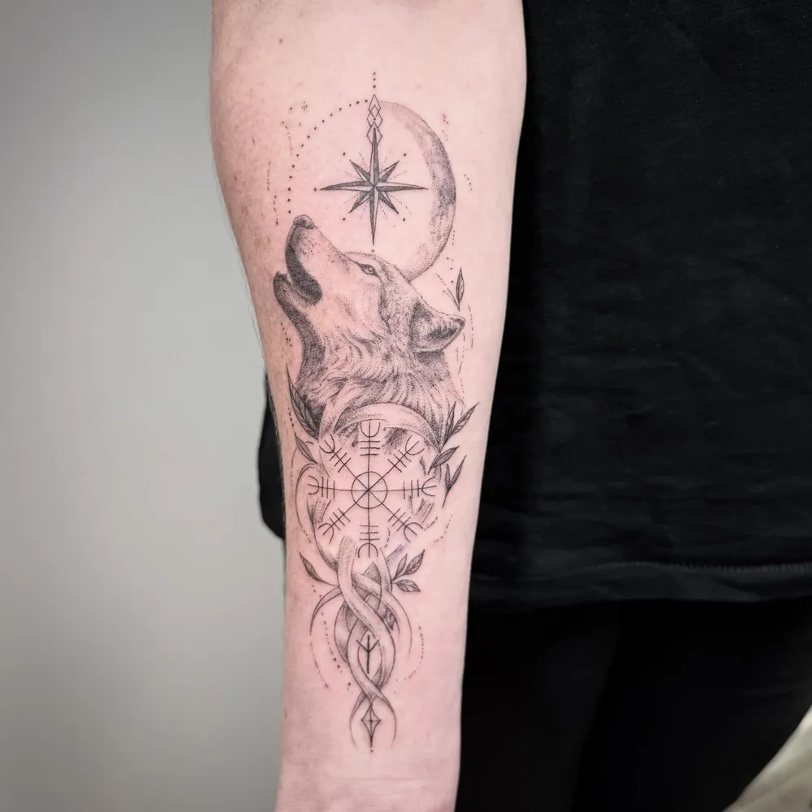
Fineline · onderarm
Wolf onder de maan
Fine lines at their finest. Simple and delicate, yet powerful.
Ik ben Vanesa. In mijn studio in de Brusselsestraat zet ik fineline, microrealism en delicate tattoos: van een piepklein sterretje op je pols tot een bloemensleeve die we sessie per sessie opbouwen.

Feniks en lelies
langs de ruggengraat
Een geboorte, drie zussen op drie continenten, een liedje dat je nooit meer kwijt wil. Vertel me waarom je hem wil, dan teken ik hem voor jou en voor jouw lichaam.

Fine lines at their finest. Simple and delicate, yet powerful.
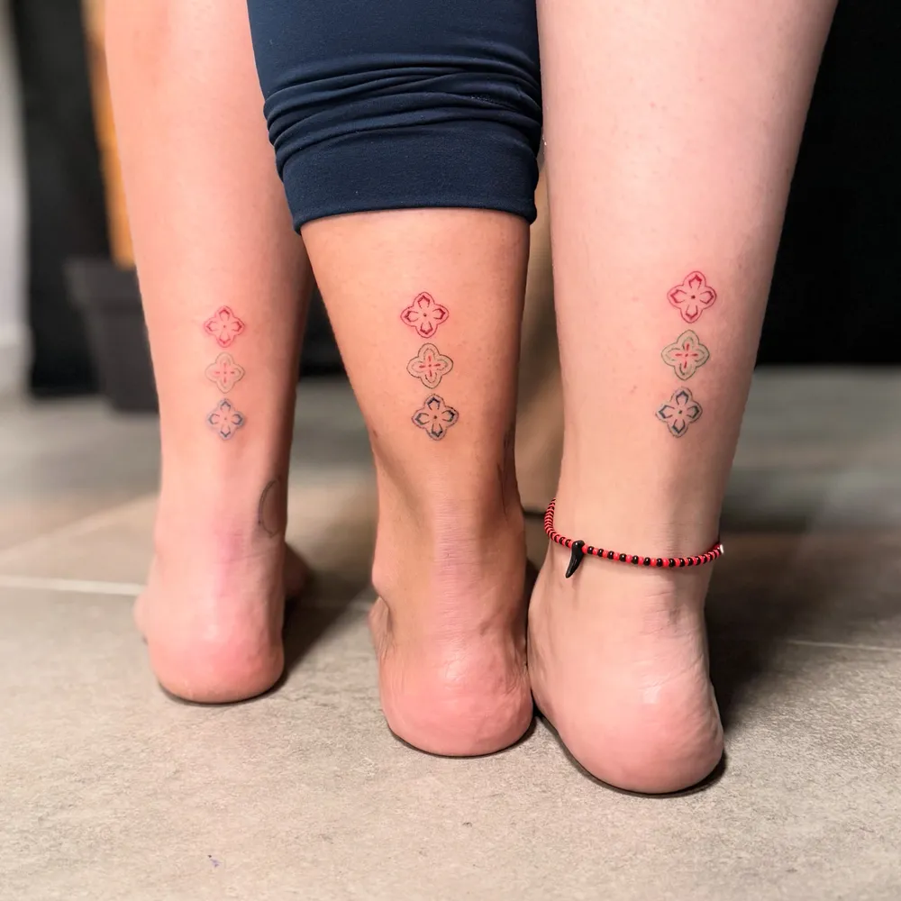
Three sisters from Colombia, each living on a different continent, meeting in Belgium. That deserves a matching tattoo.
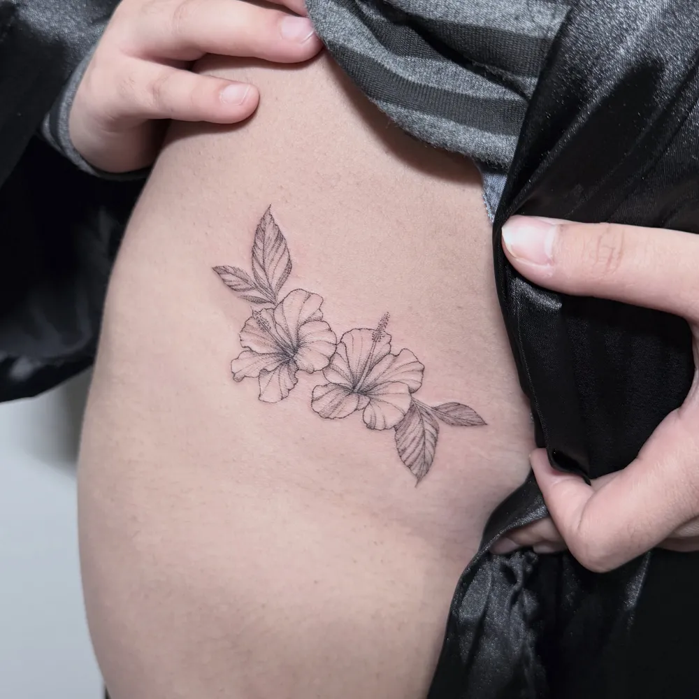
Some flowers take you back to summer, to the sea, or bring you back home.
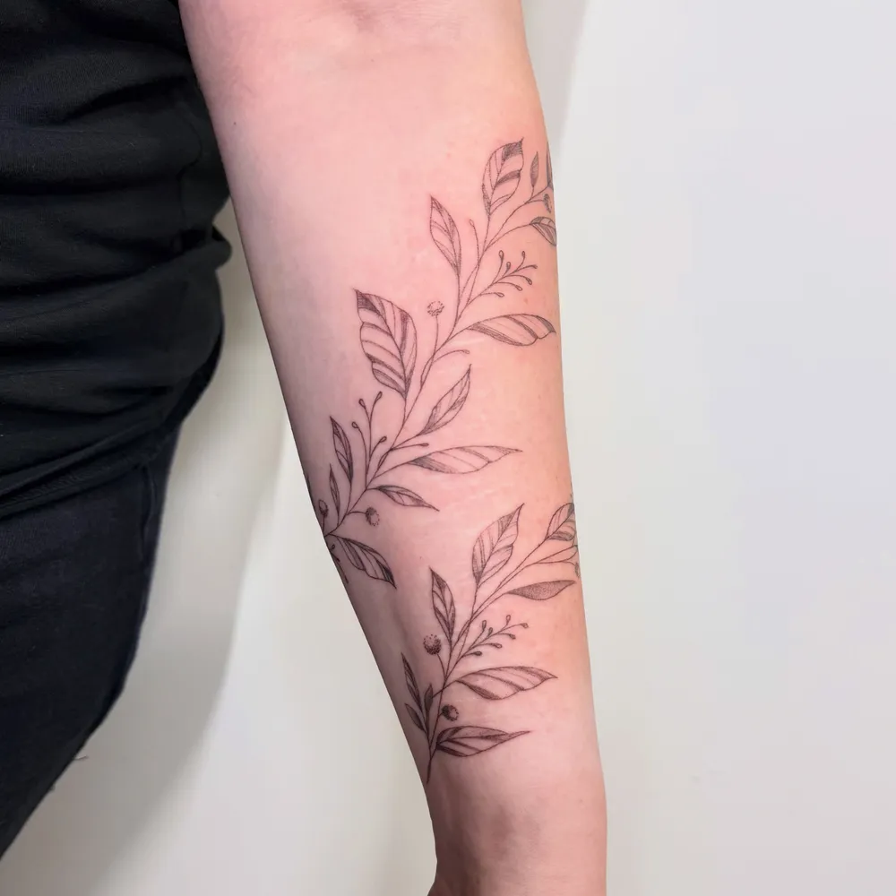
She trusted me for her first tattoo and now we are building a floral sleeve.
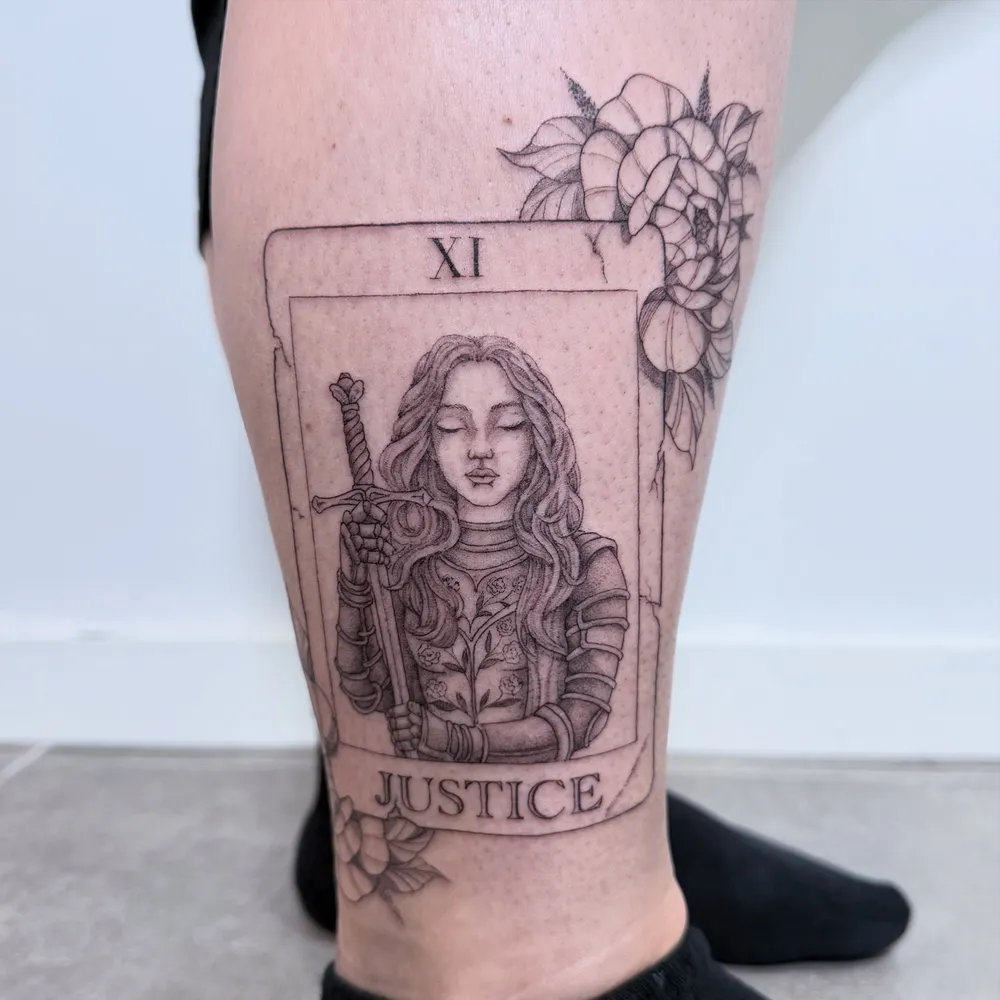
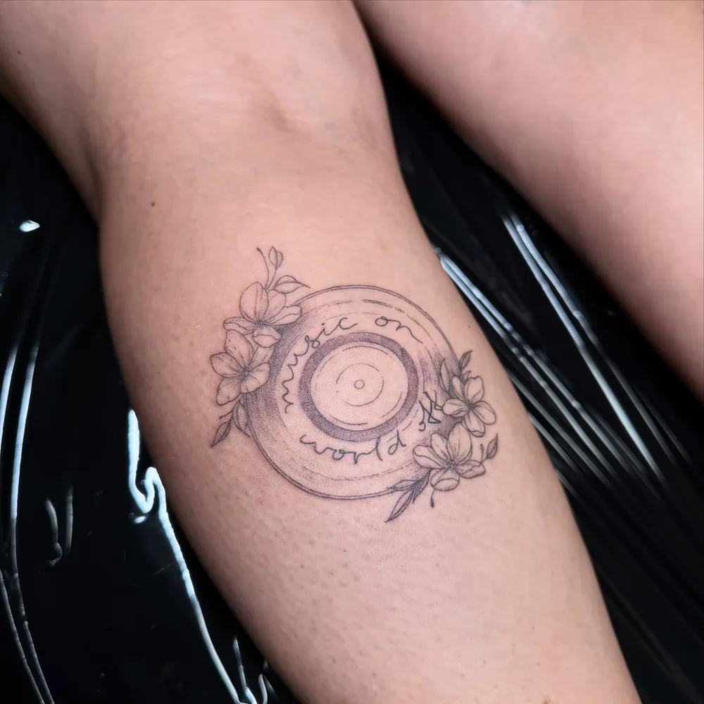
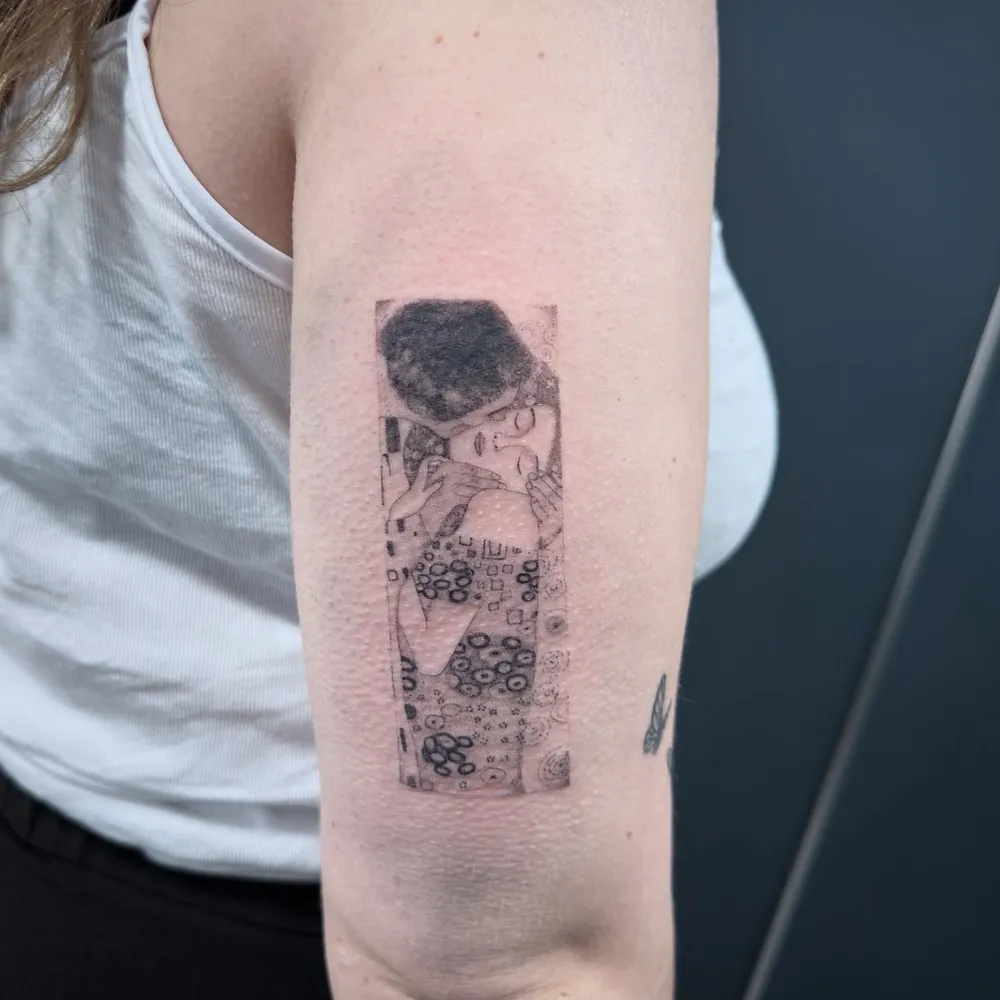

Een sterretje, een woord, een discobal. Die zet ik elke week, alleen schiet posten er vaak bij in. Of zoals ik het zelf zeg: “yes, I do a lot of them, but not many time to post it.”
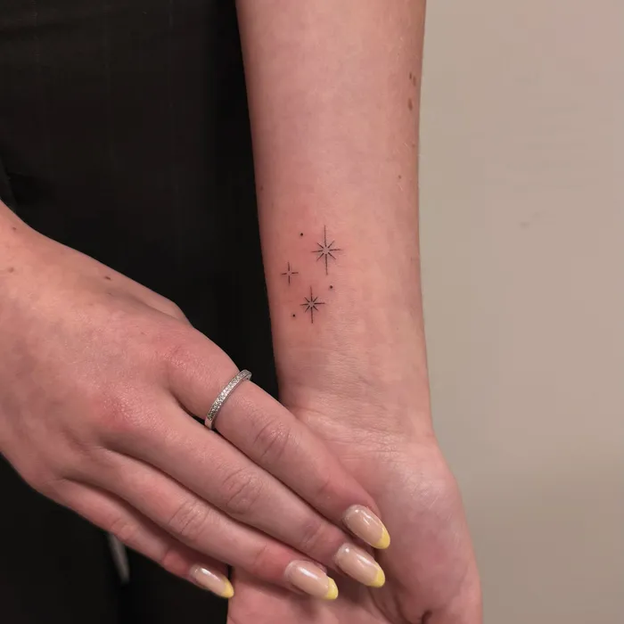
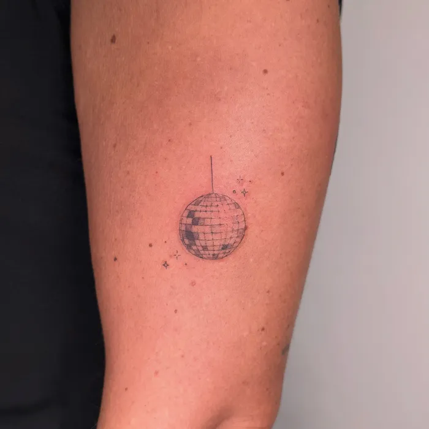

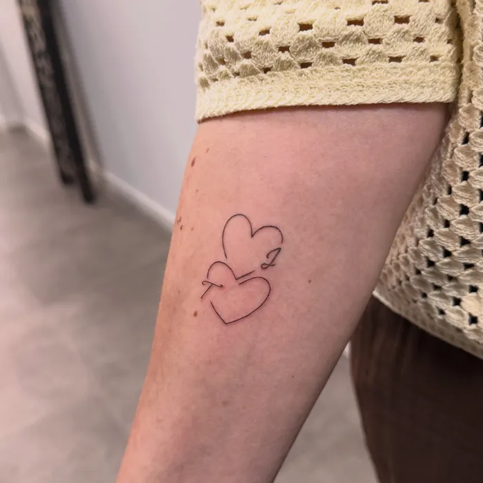
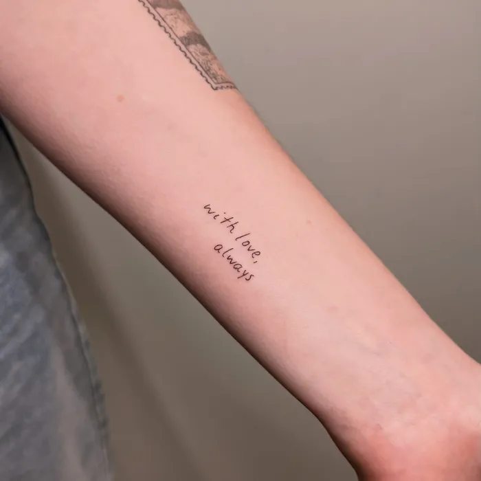
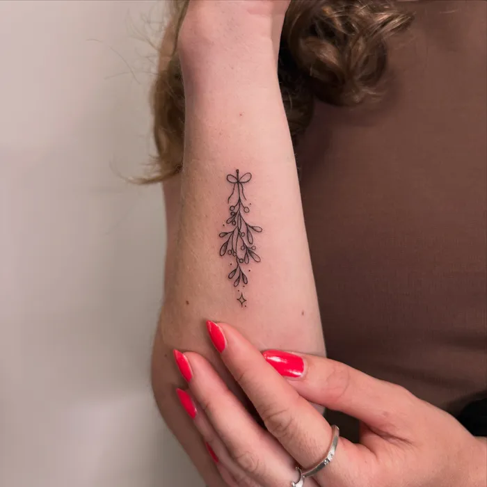
Elke maand teken ik een nieuwe pagina vol fineline-designs. Je kiest er één, twee of drie uit, en ze kunnen allemaal vaker gezet worden. Ideaal voor je eerste tattoo, of om samen met een vriendin te gaan.
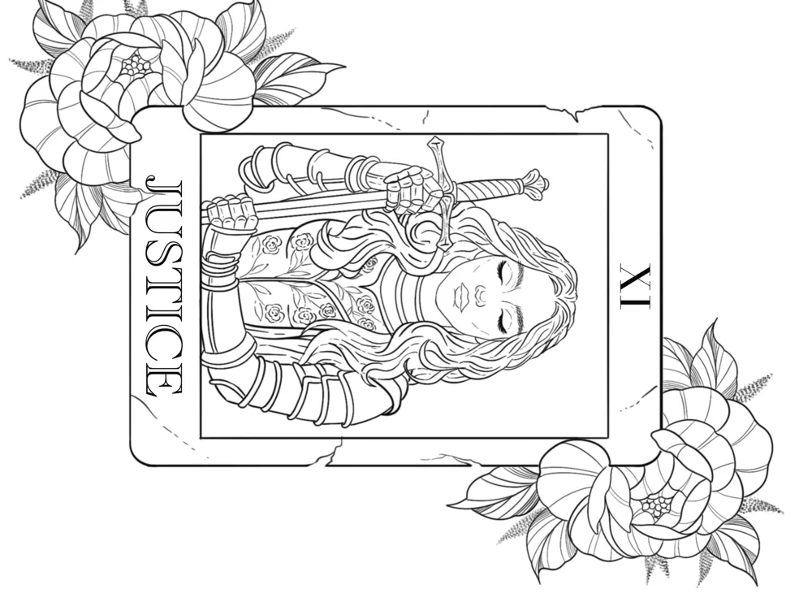
Ik werk alleen en enkel op afspraak. Daarom hou ik de regels kort en duidelijk, voor jou en voor wie na jou komt.

Ik toon designs niet op voorhand. Tijdens de afspraak is er tijd genoeg om kleine dingen aan te passen. Wordt het groter dan je vroeg, dan verandert de prijs mee.
Hoogstens vijf minuten op voorhand. Is je afspraak om 11u30 en sta je er om 11u, dan wacht je even op straat.
Leuven heeft niet zoveel automaten. De dichtste vind je in de Parijsstraat 52 en op de Bondgenotenlaan 3.
Kinderen blijven thuis. Eén iemand mag mee in de wachtruimte, niet aan de tafel. Duurt je sessie langer dan een uur, kom dan liefst alleen.
| Tattoo tot €150 | €30 |
| Van €151 tot €450 | €50 |
| Vanaf €451 | €100 |
Het voorschot gaat af van de eindprijs. Verwittig je minder dan 48 uur op voorhand, of verzet je meer dan één keer, dan ben je het kwijt.
Of het nu je eerste is of je tiende. Lange sessie? Neem snacks mee, de keuken mag je gebruiken.
Makkelijke, donkere kleren, dan zie je geen vlekken. Zit je kledij in de weg, dan ligt er een kimono klaar.
Hou je huid soepel met je gewone crème en een zachte spons onder de douche. Scheren hoeft niet.
Ik heb intussen 3 tattoo's bij Vanesa laten zetten, ze zijn allemaal (zacht uitgedrukt) PRACHTIG gezet. Ze neemt de tijd om met jou te kijken hoe de tattoo het mooiste zal worden en geeft een oprechte eerlijke mening, al moet ze het 100x opnieuw doen. Ze heeft mij nog nooit teleurgesteld. Ze verbaast mij elke keer door haar fantastische werk. Voor de rest is ze zo een super lieve warme vrouw. The place to be!!!
Ze nam uitgebreid haar tijd om samen met mij het design te bespreken zodat het volledig werd wat ik wou. Ook wanneer ik zelf enkele zaken nog niet zo goed wist (bvb grootte van de tattoo) hielp ze mij de juiste keuze maken.
Vanesa heeft voor mij 3 jaar geleden mijn eerste fineline tattoo gezet, nu 3 jaar later ben ik terug bij haar geweest. Ze heeft een prachtige stijl en ongelofelijk veel geduld.
We voelden ons super op ons gemak en waren zeer tevreden van haar fijn werk en een old school tattoo heel verfijnd gemaakt. Een aanrader!
Ondertussen al de 5de keer bij Vanessa langs gegaan! De professionele maar persoonlijke aanpak zorgt ervoor dat het een hele ervaring is en niet zomaar een “tattoo” zetten is.
Bij Vanessa eerst geweest voor rug tattoo. Heel fijn afgewerkt met fineline en veel details. Nu recent verder laten afwerken naar mijn schouder en borstkas. Heel mooi resultaat en rap genezen.
Meer heb ik niet nodig om te beginnen. Stuur er gerust een paar voorbeeldfoto's bij, dan kijk ik wat het mooiste wordt op jouw huid.
Wanneer de volgende maand openstaat, zie je eerst op Instagram.
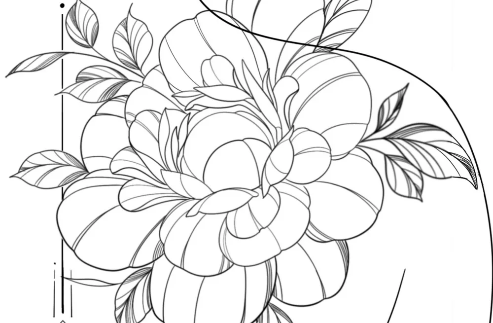
Brusselsestraat 24
3000 Leuven
Maandag tot zaterdag, enkel op afspraak
Ik maakte deze demo voor jullie om te tonen wat er kan. Na een kort gesprek maak ik er iets veel persoonlijkers van, helemaal naar jullie wens.
Vrijblijvend. Ik kom langs of we bellen.
Op maat, op jullie eigen domein.
Geen voorschot. Jullie betalen pas als alles klaar is.
Hosting, domeinnaam en kleine wijzigingen, zoals nieuwe openingsuren.
Omdat een voorbeeld meer zegt dan een mail. Zo zien jullie meteen wat er kan, en het kost jullie niets.
Nee. Het gesprek is vrijblijvend. Vinden jullie het niks, dan is het daarmee gedaan.
Na ons gesprek staat jullie site binnen 10 tot 14 dagen online.
Zeker. Jullie domeinnaam kan gewoon blijven, de nieuwe site komt in de plaats van de oude.
Nee, dat doe ik op basis van ons gesprek. Eigen foto's zijn mooi meegenomen, maar niet nodig om te starten.